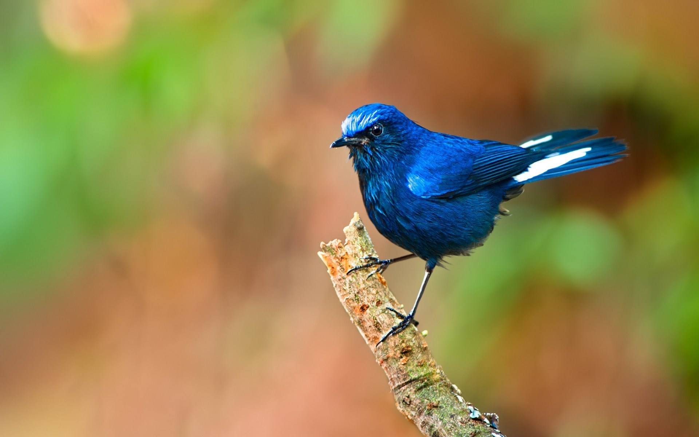

Gugamal National Park has an area of 1673.93 square kilometers. Built in 1974, this park is located in Chikhaldara and Dharni Tehsils of Amravati District, Maharashtra, India. It is part of Melghat Tiger Reserve. Flora The forest in rugged and hilly area of Melghat is typical Southern dry deciduous forest. This consist mainly of Tectona grandis, Ain, Tiwas, Aola, Lendia, Dhawada, Kusum are the important tree species. Bamboo is widely spread in the forests. Some orchids and strobilanthes in the upper hills. The area is rich in medicinal plants. Fauna The area is rich in wild mammals including Bengal tiger, Indian leopard, sloth bear, Ussuri dhole, Indian jackal, striped hyena, chausinga, sambar (largest Deer on earth) gaur, barking deer, ratel, flying squirrel, cheetal (type of Deer), nilgai, wild boar, langur, rhesus monkey, and macaque. Also found here are 25 types of fishes and many varieties of butterflies. Crocodiles were re-introduced in a systematic manner in March 1990 and February 1991 in Siddu Kund in Gadga river near Dhakna and Hathikund in the Dolar river in the Gugamal National Park.
|  | |
| Location : | Chikhaldara, Dharni, Satpura Hills, Amravati, Maharashtra |
| Coordinates | 17°11′30″N 73°46′30″E |
| Area | 200 square kilometres (122.65 sq mi) |
| Established | 1974 |
| Governing body | Maharashtra Forest Department |